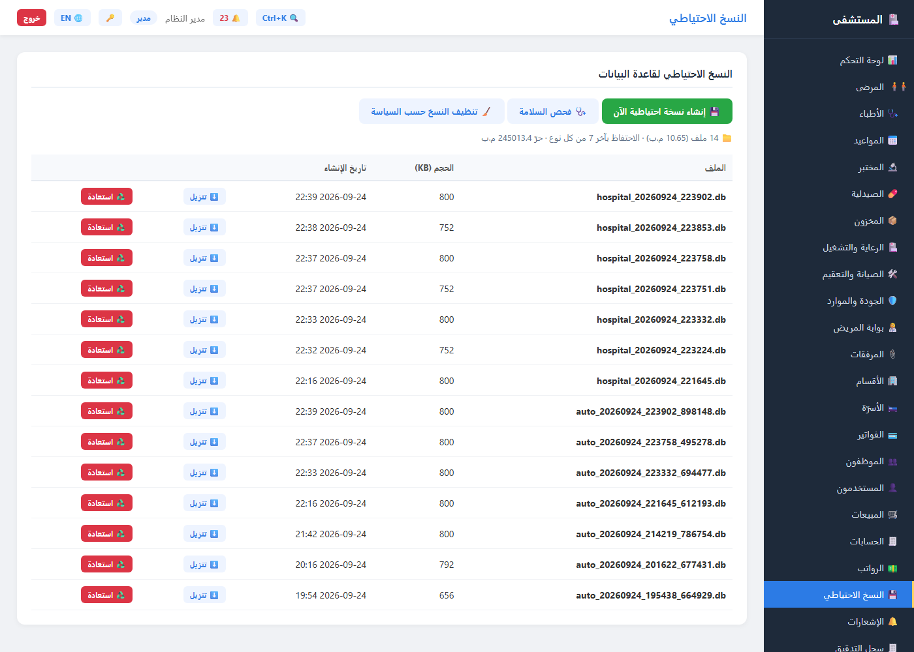
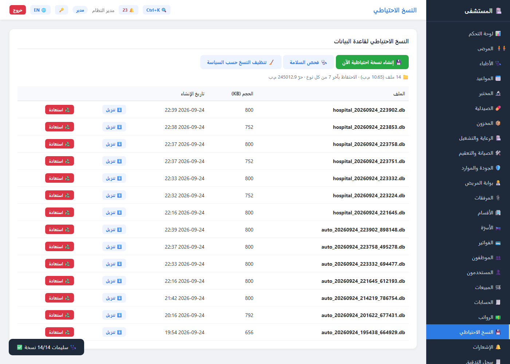
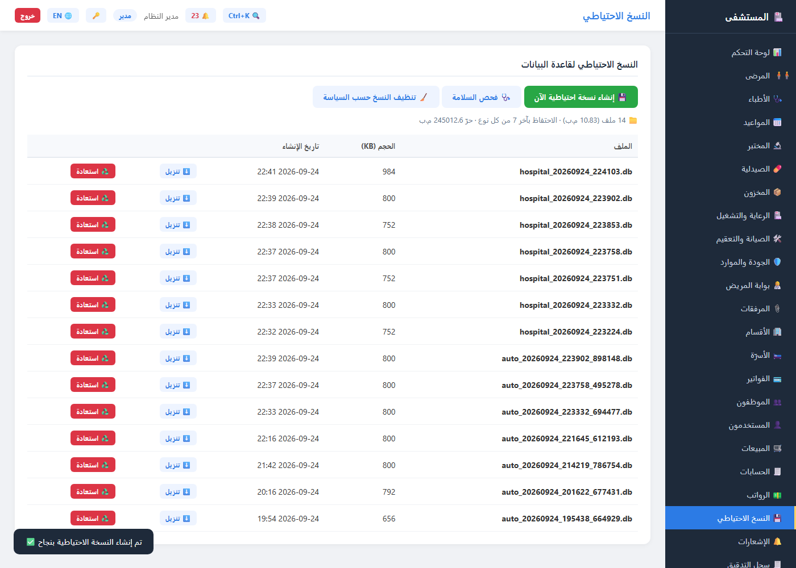
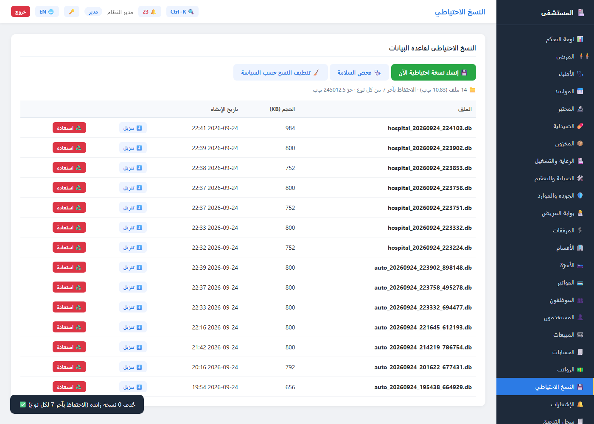
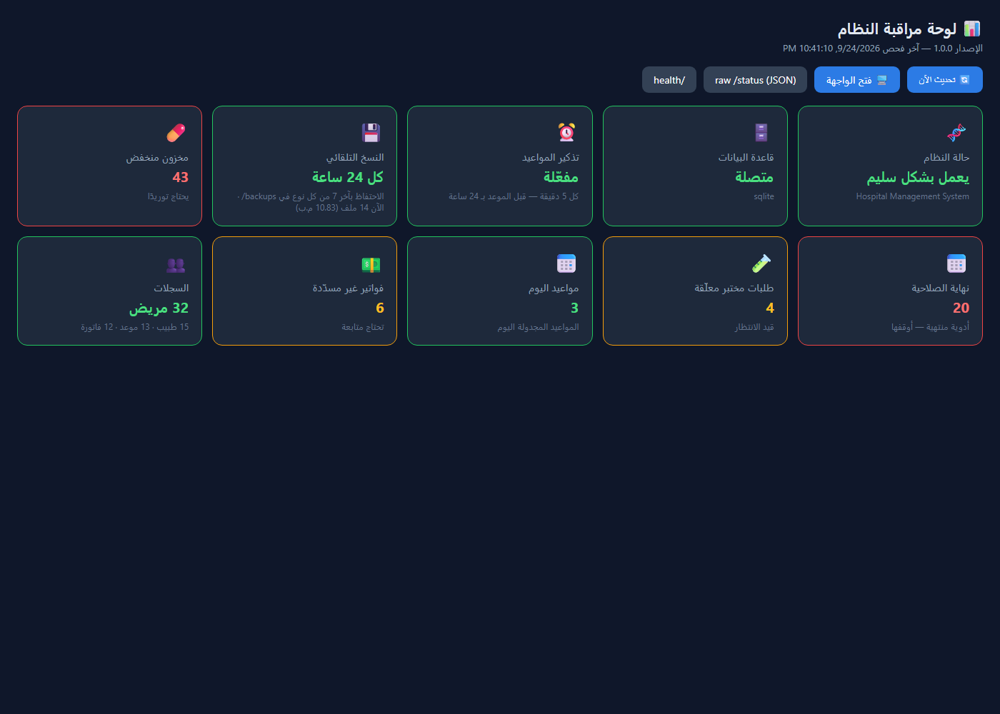

1 البداية: تسجيل الدخول 🔐
افتح /ui في نافذة خاصّة (Incognito) لترى شاشة الدخول مباشرة. شاشة النسخ
الاحتياطي للمدير فقط — أي دور آخر يرى «🔒 هذه الصفحة متاحة للمدير فقط»، وبدون
توكن 401 لكل النهايات.
| الدور | اسم المستخدم | كلمة المرور | النسخ الاحتياطي |
|---|---|---|---|
| 👨💼 مدير | admin | admin123 | ✅ كامل (إنشاء/فحص/تنظيف/استعادة) |
| 🩺 طبيب | drsara | sara12345 | 🔒 مرفوض 403 |
| 🧑💼 موظف استقبال | reception1 | rec12345 | 🔒 مرفوض 403 |

2 شاشة النسخ الاحتياطي 💾
GET /backupGET /backup/statusواجهةالشريط الجانبي ← 💾 النسخ الاحتياطي. أعلى الشاشة ثلاثة أزرار، وتحتها
سطر حالة حيّ يقرأ /backup/status لحظيًا:
- 📁 العدد والحجم: كم ملفًا موجود وحجمه الإجمالي بالميغابايت.
- 🗂️ سياسة الاحتفاظ: «آخر 7 من كل نوع» — يُحدَّد من بيئة التشغيل
(
BACKUP_KEEP_*). - 💽 المساحة الحرّة على القرص قبل أن تفاجأك بامتلاء الأسطر.
الجدول:
- اسمه وحجمه وتاريخ إنشائه بدقة — أحدث النسخ أولًا.
- لكل صف: ⬇️ تنزيل فوري · ♻️ استعادة (تظهر فقط للملفات القابلة للاستعادة — ملفات قاعدة البيانات الحالية).

hospital_* (نسخ يدوية/دورية) وauto_* (تلقائية كل 24 ساعة)
معاً في قائمة واحدة.3 🩺 فحص السلامة — تأكّد قبل أن تحتاجها
GET /backup/verifyواجهةزر «🩺 فحص السلامة» يستدعي /backup/verify?limit=20: يقرأ كل ملف
ويتحقق من سلامته دون أي كتابة — العناوين وعدد المستخدمين داخل قاعدة النسخ —
ثم يعيد قائمة ok وbad.
النتيجة تظهر في لقطة واحدة:
- كل النسخ سليمة ← توست أخضر «🩺 سليمات 14/14 نسخة ✅».
- أي تالفة ← توست أحمر يسمّيها بالاسم: «⚠️ 1 من 14 تالفة: الملف_الفاشل.db» لتعرف بالضبط أيها يجب إعادة إنشائه.
وللدقّة العميقة: ?deep=integrity يفحص بنية الملف كاملًا (أبطأ وأشمل) —
والفحص الافتراضي سريع يكفي للاستخدام اليومي. ?deep=bad يعيد فحص
الملفات المشبوهة فقط.

4 💾 إنشاء نسخة الآن
POST /backupواجهةزر «💾 إنشاء نسخة احتياطية الآن» — نسخة كاملة لقاعدة البيانات باسم
hospital_YYYYMMDD_HHMMSS.db تظهر في أعلى الجدول فورًا.
ما يحدث خلف الكواليس:
- النسخ يتمّ في معاملة واحدة آمنة (SQLite backup API) — لا نسخة ناقصة أثناء الكتابة.
- التقليم التلقائي بعدها مباشرة: قبل إظهار النجاح يُستدعى
prune_backups()— فلا يتراكم شيء حتى لو نسيت زر التنظيف. - التوست يذكر اسم الملف وحجمه، والجدول ينعكس عليه مباشرة.

hospital_20260924_224103.db (984KB) في رأس القائمة مع توست النجاحPOST /backup بتوكن المدير —
نفس النتيجة تمامًا كما في الواجهة.5 🧹 التنظيف حسب السياسة
POST /backup/pruneواجهةزر «🧹 تنظيف النسخ حسب السياسة» يستدعي POST /backup/prune —
القاعدة بسيطة وقاطعة:
- يُبقي آخر 7 من
hospital_*وآخر 7 منauto_*. - لا يلمس أي ملف خارج النوعين مهما كان عمره.
- التوست يبلّغ بالصراحة: «🧹 حُذف N نسخة زائدة (الاحتفاظ بآخر 7 لكل نوع) ✅» — ولو لا شيء يُحذف يقلّص قلبك: «حُذف 0».
وإلى جانب الزر: التقليم يجري تلقائيًا بعد كل إنشاء — أي أن السياسة مطبّقة
دائمًا حتى لو لم تفتح الشاشة أسبوعًا. (parameter ?keep= يسمح بتجاوز
العدد مؤقتًا).

app/backups يحوي 170 ملفًا
متراكمة من الاختبارات — شغّلت السياسة تنظّفه إلى 14 في مرّة واحدة، ومنع التراكم
من جديد منذ ذلك الحين.6 📊 لوحة المراقبة — النسخ من بعيد
GET /monitorمهمة خلفيةصفحة /monitor (داكنة، بلا دخول) لحظة نظرتك الأولى على النظام كل صباح:
بطاقة النسخ الاحتياطي فيها:
- ⏰ «كل 24 ساعة» — وتوقّع النسخة التلقائية القادمة (مهمة خلفية).
- 🗂️ سياسة الاحتفاظ بآخر 7 من كل نوع + العدد والحجم الآن (14 ملف · 10.83 م.ب).
- وبجوارها بقية المؤشرات: قاعدة البيانات مصقولة ✅ · تذكير المواعيد · حالة النظام.

/status/status فعليًا: عدّ الملفات
وإجمالي الميجابايت — أي تغيّر في المجلد (بأي وسيلة) ينعكس على اللوحة فورًا.🎓 انتهى؟ الخطوة التالية
- 📘 دليل المستخدم الكامل — كل الشاشات والأدوار (وPDF: user-guide.pdf).
- 🎓 جولة الصيدلية والمختبر — الجولة التفاعلية السابقة (6 شاشات).
- 🧪 للفحص الآلي:
pytest(194 اختبارًا — منها 13 لصلابة النسخtest_backup_hardening.py) ·stack_check.py(86 فحصًا على قاعدة نظيفة) ·load_test.py(p95 ≤ 700ms) — والكل يجري الآن على GitHub Actions عند كل دفع (أول جولة خضراء كاملة: run #10). - 🐙 المستودع: github.com/aymanhamid2020-dot/hospital-management-system.